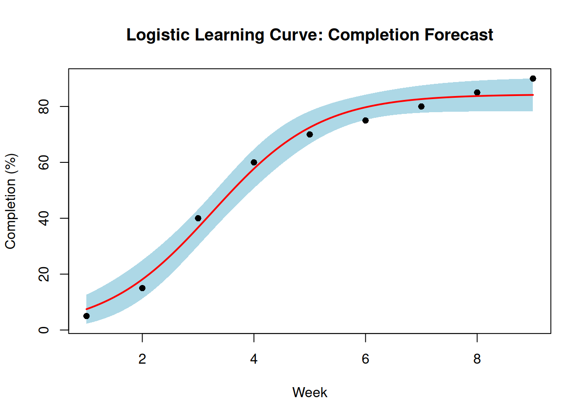
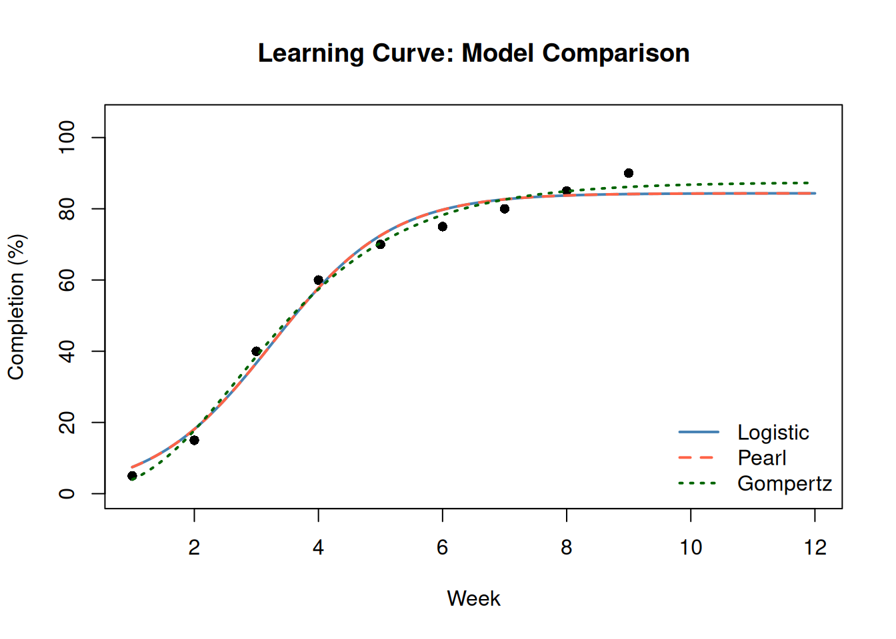

library(PRA)7 S Is for Success: Sigmoidal Learning Curves
“First it’s slow, then it’s fast, then you’ve already hit the ceiling.” — P.G.
Every team that’s ever built something knows the pattern. Week one: figuring things out. Week four: hitting a stride. Week eight: slowing down as completion approaches 100%. This S-shaped curve — slow start, rapid middle, graceful plateau — is not a quirk of one project. It’s a near-universal pattern in learning and production processes, and it has a name: the sigmoidal curve.
If you can fit a sigmoidal model to your early progress data, you can forecast when you’ll finish — and how confident you should be in that forecast.
7.1 Why Sigmoidal?
Linear models (“we’ll complete 10% per week forever”) break down at the extremes: they predict negative completion before the project starts and more than 100% after it finishes. Exponential models grow forever. Sigmoidal models are bounded: they start slow, accelerate, and plateau at a ceiling value, making them physically meaningful for completion percentages.
Learning curves are used to:
- Forecast completion: Predict when a task or deliverable will reach 100% based on past progress.
- Identify acceleration: Detect when a project is in its rapid-improvement phase versus plateauing.
- Set realistic milestones: Calibrate schedule targets against demonstrated learning rates.
7.2 The Three Models
PRA provides three sigmoidal model types:
| Model | Formula | Parameters |
|---|---|---|
| Logistic | \(K / (1 + e^{-r(t - t_0)})\) | K = ceiling; r = growth rate; t₀ = inflection time |
| Pearl | \(K / (1 + e^{-r(t - t_0)})\) | Same functional form as Logistic |
| Gompertz | \(A \cdot e^{-b \cdot e^{-ct}}\) | A = ceiling; c = growth rate; b = initial suppression |
The Logistic and Pearl models are mathematically identical but fitted differently. The Gompertz has a different shape: its inflection point occurs earlier and the curve is asymmetric, making it better suited for processes where acceleration comes quickly and the plateau is long.
7.3 Example: Fitting a Logistic Model
We have weekly completion percentage data for a construction deliverable over 9 weeks.
data <- data.frame(
time = 1:9,
completion = c(5, 15, 40, 60, 70, 75, 80, 85, 90)
)7.3.1 Fit the Model
fit <- fit_sigmoidal(data, "time", "completion", "logistic")7.3.2 Assess Fit Quality
Use summary() to examine the fitted coefficients, their standard errors, and the residual standard error — a measure of how closely the model matches the observed data.
summary(fit)
Formula: y ~ logistic(x, K, r, t0)
Parameters:
Estimate Std. Error t value Pr(>|t|)
K 84.3515 2.5142 33.550 4.67e-08 ***
r 1.0356 0.1380 7.505 0.000289 ***
t0 3.2520 0.1459 22.284 5.34e-07 ***
---
Signif. codes: 0 '***' 0.001 '**' 0.01 '*' 0.05 '.' 0.1 ' ' 1
Residual standard error: 4.148 on 6 degrees of freedom
Number of iterations to convergence: 10
Achieved convergence tolerance: 1.49e-08A small residual standard error (relative to the response scale) indicates a good fit. Coefficient \(t\) values with \(|t| > 2\) are statistically meaningful.
7.3.3 Plot with Confidence Bands
plot_sigmoidal() plots the data, fitted curve, and optional confidence bounds in a single call.
plot_sigmoidal(
fit, data, "time", "completion", "logistic",
conf_level = 0.95,
main = "Logistic Learning Curve — Completion Forecast",
xlab = "Week",
ylab = "Completion (%)"
)
The shaded region is the 95% confidence band — the range within which the true curve is likely to lie. Note how the band widens as we extrapolate past the observed data range.
7.3.4 Predict Future Completion
Use predict_sigmoidal() to generate numeric forecasts, including confidence bounds.
future_times <- seq(1, 12, length.out = 100)
predictions <- predict_sigmoidal(fit, future_times, "logistic", conf_level = 0.95)
knitr::kable(
tail(round(predictions, 1), 5),
caption = "Predicted completion (final 5 forecast points)",
row.names = FALSE
)| x | pred | lwr | upr |
|---|---|---|---|
| 11.6 | 84.3 | 78.2 | 90.5 |
| 11.7 | 84.3 | 78.2 | 90.5 |
| 11.8 | 84.3 | 78.2 | 90.5 |
| 11.9 | 84.3 | 78.2 | 90.5 |
| 12.0 | 84.3 | 78.2 | 90.5 |
7.4 Comparing All Three Model Types
It is good practice to fit multiple models and compare their goodness-of-fit. Different shapes may fit your data better.
fit_logistic <- fit_sigmoidal(data, "time", "completion", "logistic")
fit_pearl <- fit_sigmoidal(data, "time", "completion", "pearl")
fit_gompertz <- fit_sigmoidal(data, "time", "completion", "gompertz")rse <- function(fit) summary(fit)$sigma
comparison <- data.frame(
Model = c("Logistic", "Pearl", "Gompertz"),
Residual_StdError = round(c(rse(fit_logistic), rse(fit_pearl), rse(fit_gompertz)), 3)
)
knitr::kable(comparison, caption = "Model Fit Comparison (lower RSE = better fit)")| Model | Residual_StdError |
|---|---|
| Logistic | 4.148 |
| Pearl | 4.148 |
| Gompertz | 2.887 |
Now plot all three fits side by side:
x_seq <- seq(1, 12, length.out = 200)
pred_log <- predict_sigmoidal(fit_logistic, x_seq, "logistic")
pred_prl <- predict_sigmoidal(fit_pearl, x_seq, "pearl")
pred_gom <- predict_sigmoidal(fit_gompertz, x_seq, "gompertz")
plot(data$time, data$completion,
pch = 16, xlim = c(1, 12), ylim = c(0, 105),
main = "Learning Curve: Model Comparison",
xlab = "Week", ylab = "Completion (%)"
)
lines(pred_log$x, pred_log$pred, col = "steelblue", lwd = 2)
lines(pred_prl$x, pred_prl$pred, col = "tomato", lwd = 2, lty = 2)
lines(pred_gom$x, pred_gom$pred, col = "darkgreen", lwd = 2, lty = 3)
legend("bottomright",
legend = c("Logistic", "Pearl", "Gompertz"),
col = c("steelblue", "tomato", "darkgreen"),
lty = c(1, 2, 3), lwd = 2, bty = "n"
)
WarningLogistic and Pearl Are the Same Model
The Logistic and Pearl models share the same mathematical formula and will produce identical fits on the same data. The distinction is historical, not functional. When comparing model fits, the Pearl and Logistic RSEs will always be equal — this is expected behavior, not a bug.
Gompertz is genuinely different: its inflection point occurs earlier and the curve is asymmetric, making it better suited for processes that accelerate quickly before plateauing slowly.
7.5 Summary
The sigmoidal workflow in PRA:
fit_sigmoidal()— fit a model to observed time-completion datasummary(fit)— inspect coefficient estimates and goodness-of-fitpredict_sigmoidal()— generate numeric forecasts with optional confidence boundsplot_sigmoidal()— visualize the fit and confidence band
Choose the model type based on the shape of your data and theoretical expectations about the learning process.
7.6 Summary
7.7 Exercises
Model selection. Which model (Logistic, Pearl, Gompertz) would be most appropriate when early progress is slow but then the team suddenly accelerates around week 3? What parameter would you adjust to shift the inflection point?
Fit comparison. Using the construction data from this chapter, fit all three models and compare their residual standard errors. Which model fits best? Does the best-fitting model always give the most sensible forecast? Plot the predictions out to week 15 and compare the three extrapolations.
Confidence band width. ★ Predict percent complete at week 12 using the logistic model. How wide is the 95% confidence band (upper − lower)? At week 6? At week 3? What drives the increasing uncertainty as you extrapolate further from the observed data?
Your own data. Collect or invent 8 weeks of progress data for a project activity. Fit a logistic model. Does the model suggest you’ll reach 90% completion by week 12? By week 16? What does the confidence interval tell you about the reliability of that forecast?
Beyond completion. ★ Learning curves can model more than completion percentages — they can model cost efficiency, defect rates, or productivity. Choose one of these alternative interpretations and describe how you would set up the
dataframe, what “ceiling” K means in that context, and what a fitted model would tell you.